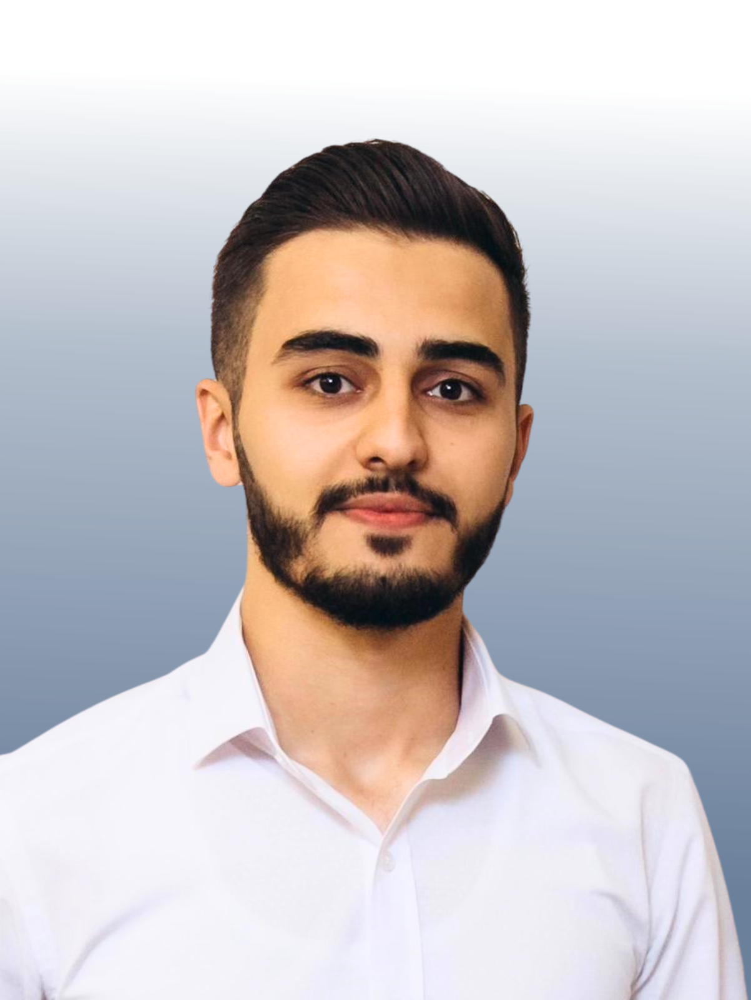

Kanan Gasimli

Summary
Passionate and motivated individual transitioning into the field of Software Engineering.
Education
-
Masters in Business Administration in Finance
Azerbaijan State University of Economics
Sep 2023 - Current
-
Bachelor of Science in Computer Engineering
Azerbaijan State Oil and Industry University
Sep 2019 - Jun 2023
Work Experience
-
Software Development (Intern)
Saiket Systems - Remote
Jan 2025 - Current
-
Exploring creative and innovative web solutions while contributing to impactful projects.
-
Engaged in diverse projects that leverage expertise in software technologies, programming languages,
and design principles.
-
Developing user-friendly and visually appealing web interfaces to enhance the company's online
presence.
-
Collaborating with a dynamic team to create cutting-edge solutions aligned with modern software
development trends.
-
IT Help Desk (Intern)
CBC TV - Baku, Azerbaijan
Feb 2023 - May 2023
-
Streamlined software deployment processes, reducing setup times by 30% and
enhancing system efficiency.
-
Implemented a troubleshooting guide that decreased recurring issues by 25%,
improving system reliability.
-
Conducted comprehensive operating system upgrades and maintenance, leading to a 20%
improvement in system stability.
-
Assistant Programmer (Intern)
“USTAD ITTM” - Baku, Azerbaijan
Nov 2021 - Apr 2022
-
Mastered a broad range of Python libraries, contributing to a 15% increase in project
delivery speed.
-
Developed and led a Python training program, increasing team productivity by 20%.
-
Created innovative project solutions using OOP principles, significantly enhancing project
scalability and maintainability.
-
Automated data analysis tasks using Pandas and NumPy, reducing manual data
processing time by 40%.
Skills
-
Programming Languages: HTML, CSS, Python
-
Database Languages: SQL (Oracle SQL, MySQL)
-
Spreadsheet Software: Microsoft Excel
Language Skills
-
English: Intermediate
-
Turkish: Advanced
-
Azerbaijani: Native
Other